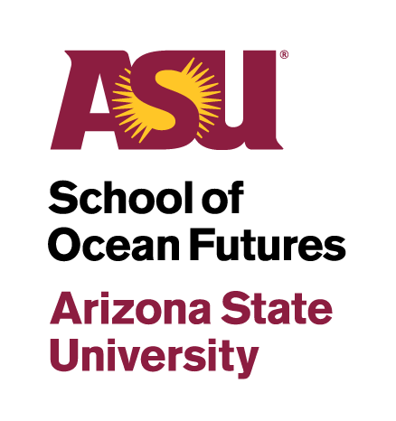
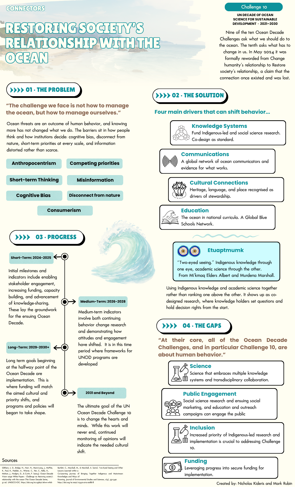

Restoring Society's Relationship with the Ocean
Unpacking UN Ocean Decade Challenge 10 — the one Challenge aimed at us, not the ocean

Made for ASU School of Ocean Futures, in collaboration with classmate Nicholas Kideris

The Problem
Nine of the ten UN Ocean Decade Challenges ask what we should do to the ocean. The tenth asks what has to change in us. In May 2024 it was formally reworded from "Change humanity's relationship" to "Restore society's relationship" — a claim that the connection once existed and was lost.
Ocean threats are an outcome of human behavior, and knowing more hasn't changed what we do. The barriers sit in how people think and how institutions decide: cognitive bias, disconnect from nature, short-term priorities at every scale, and information distorted rather than scarce.
The Solution
Four main drivers that can shift behavior:
Fund Indigenous-led and social science research, with co-design as the standard rather than the exception.
A global network of ocean communicators, and evidence for what actually works.
Heritage, language, and place recognized as drivers of stewardship, not footnotes to it.
The ocean embedded in national curricula, backed by a Global Blue Schools Network.
Indigenous knowledge through one eye, academic science through the other — from Mi'kmaq Elders Albert and Murdena Marshall. It means using both knowledge systems together rather than ranking one above the other: co-designed research where knowledge holders set the questions and hold decision rights from the start.
Progress
Initial milestones and indicators include enabling stakeholder engagement, increasing funding, capacity building, and advancement of knowledge-sharing — laying the groundwork for the rest of the Ocean Decade.
Continuing behavior-change research while demonstrating how attitudes and engagement have shifted. This is the window where frameworks for UN Ocean Decade programs get developed.
Implementation begins at the Decade's halfway point — funding matches the aimed cultural and priority shifts, and programs and policies start taking shape.
The ultimate goal of Challenge 10 is to change hearts and minds. That work never fully ends — continued monitoring of opinions will indicate whether the needed cultural shift is holding.
"At their core, all of the Ocean Decade Challenges, and in particular Challenge 10, are about human behavior." Four gaps remain: Science that embraces multiple knowledge systems and transdisciplinary collaboration; Public Engagement through social science research, social marketing, and education/outreach campaigns; Inclusion — increased priority for Indigenous-led research and implementation; and Funding — leveraging progress into secured funding for implementation.
Sources
Glithero, L. D., Bridge, N., Hart, N., Mann-Lang, J., McPhie, R., Paul, K., Peebler, A., Wiener, C., Yen, C., Kelly, R., McRuer, J., Hodgins, D., & Curlin, F. (2024). Ocean Decade Vision 2030 White Papers – Challenge 10: Restoring society's relationship with the ocean (The Ocean Decade Series, 51.10). UNESCO-IOC.
Bartlett, C., Marshall, M., & Marshall, A. (2012). Two-Eyed Seeing and other lessons learned within a co-learning journey of bringing together Indigenous and mainstream knowledges and ways of knowing. Journal of Environmental Studies and Sciences, 2(4), 331–340.